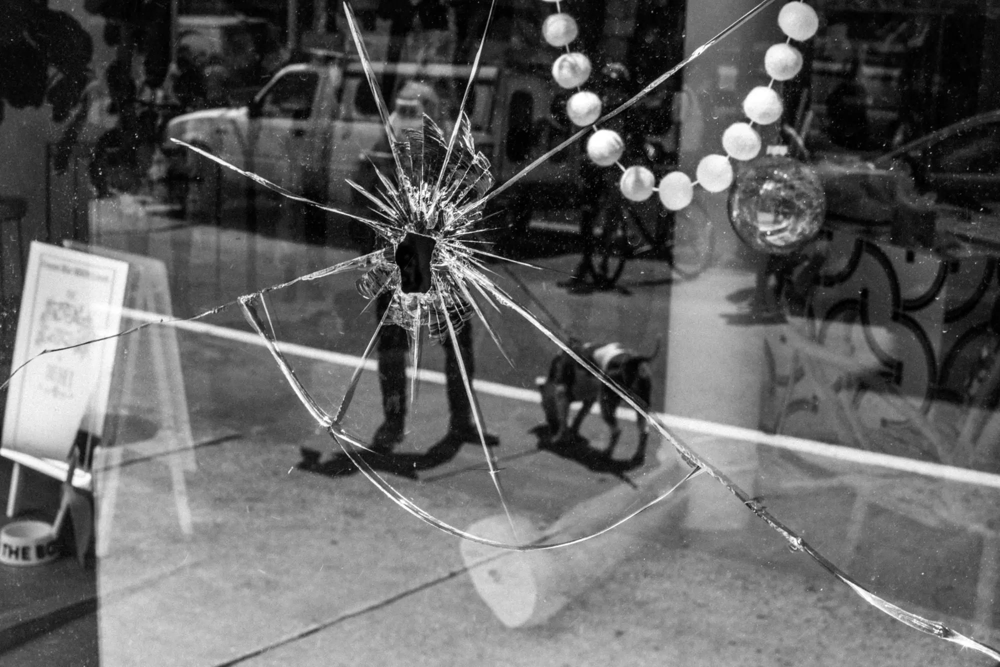

Intermission
New York City was one of the hardest-hit cities in the United States during COVID-19. This chapter is a visual archive of a city famous for its fast-paced streets and congested sidewalks, forced to pause.
The invisible disease shut down the city. Stores were left suspended in time, displaying winter fashion well into spring. Time was nowhere to be seen. Then George Floyd was killed, and people filled the streets to protest yet another Black man killed by police.
Chapter I moves from lockdown and shutdown through the beginning of 2021.
